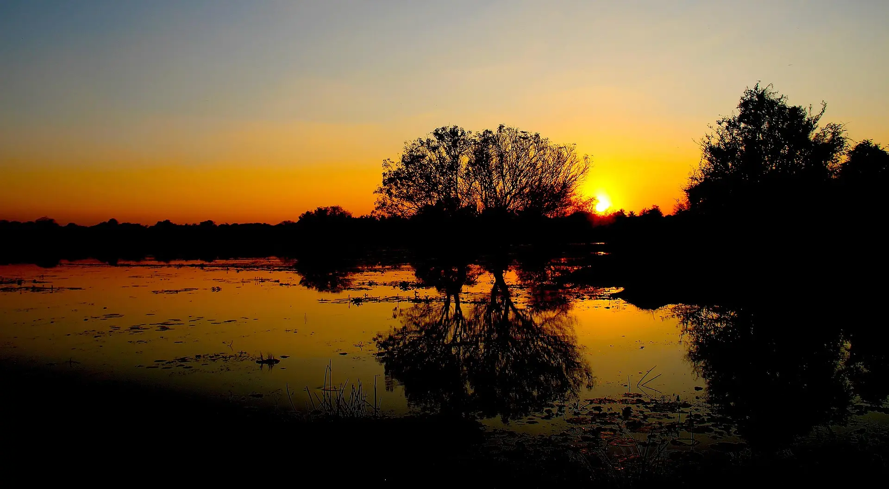
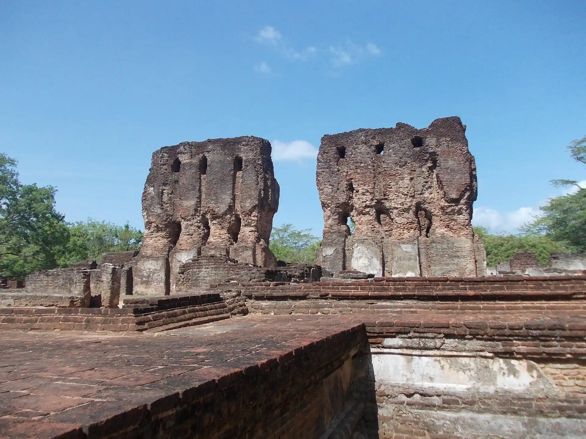
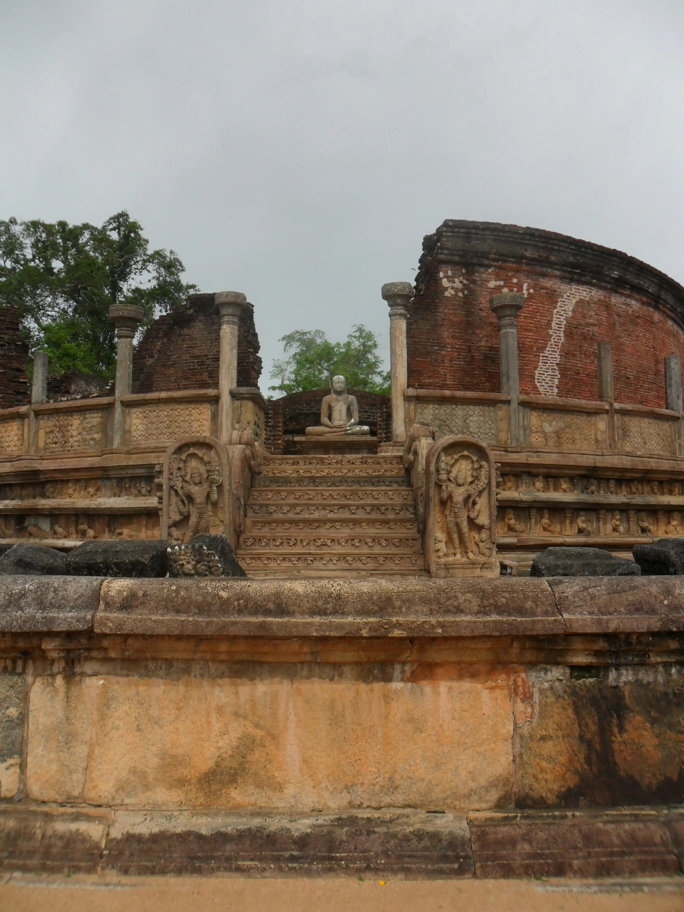
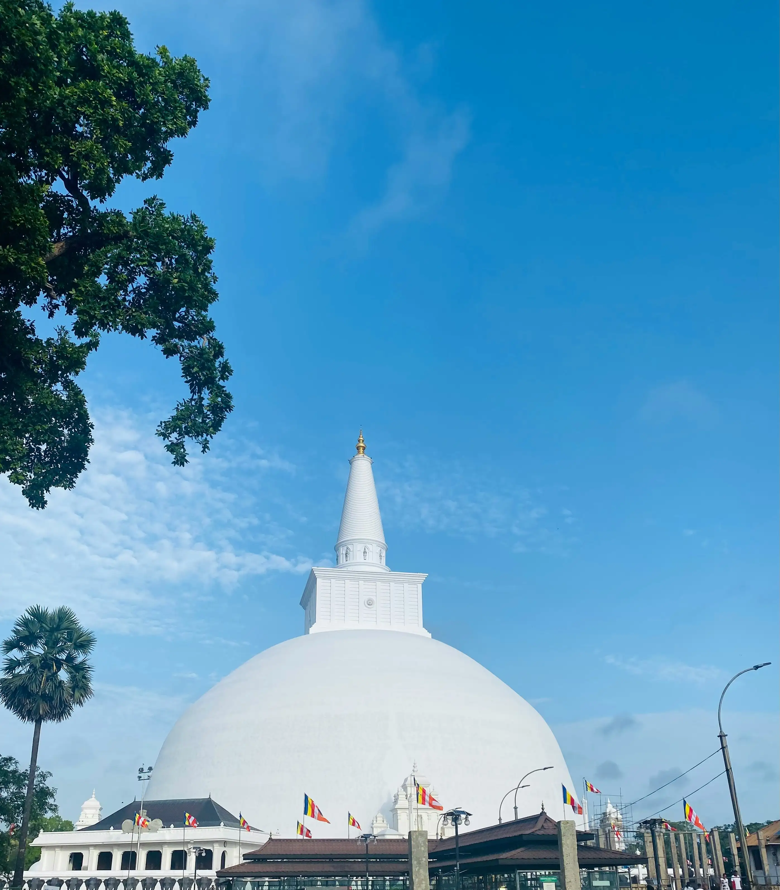
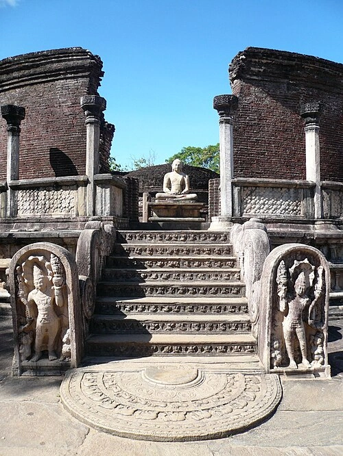
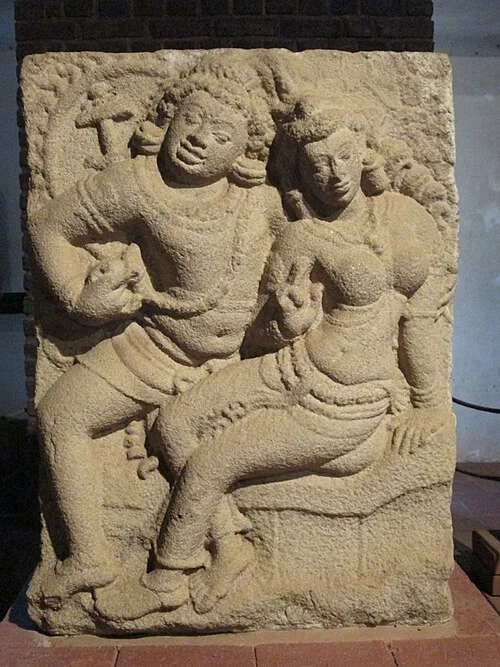

For over fifteen centuries, the northern plains of Sri Lanka were the center of a brilliant Buddhist civilization. The sacred cities of Anuradhapura and Polonnaruwa served as the seats of power for successive dynasties, creating a legacy of architectural grandeur and engineering marvels.
From the world's tallest brick structures to sophisticated irrigation systems that still water the fields today, these kingdoms represent the zenith of ancient South Asian culture and spirituality.

Anuradhapura was the first capital of ancient Sri Lanka and remains one of the world's major Buddhist pilgrimage sites. Founded in the 4th century BC, it grew into a sprawling metropolis, centered around massive stupas and monastic complexes.
The city's layout was a masterpiece of urban planning, integrating spiritual monuments with an advanced hydraulic system of man-made reservoirs (wewas) and canals. These waters sustained a population that reached into the hundreds of thousands at its peak.
Today, the ruins offer a window into a time when Sri Lanka was a beacon of Buddhist learning, attracting scholars and pilgrims from across the Silk Road.
A hemispherical structure and a marvel of ancient engineering, standing as one of the world's tallest monuments of antiquity.
The oldest documented tree in the world, grown from a sapling of the original Bodhi tree under which Buddha attained enlightenment.
Once the third tallest structure in the ancient world, after the Great Pyramids, this massive brick stupa remains a breathtaking sight.
The first Buddhist stupa built in Sri Lanka after the introduction of Buddhism, known for its elegant concentric stone pillars.
Considered one of the best specimen of bathing tanks or pools in ancient Sri Lanka, showcasing sophisticated filtration and drainage.

A rock temple of the Buddha where four colossal statues were carved out of a single granite rock face.
A massive man-made lake so large it was named the "Sea of Parakrama," a testament to ancient irrigation mastery.
An enormous brick image house with walls soaring 17 meters high, housing a headless but still imposing Buddha statue.
A circular relic house featuring intricate stone carvings and guard stones, considered one of the most beautiful ruins in the country.
A multi-story structure that once boasted 1,000 rooms, now standing as impressive brick ruins of a royal past.
After the fall of Anuradhapura, Polonnaruwa became the second capital of Sri Lanka. It reached its zenith under King Parakramabahu I, who transformed the city into a magnificent garden city and irrigation hub.
Unlike the sprawling nature of Anuradhapura, Polonnaruwa is more compact, with its major monuments clustered together, showcasing a blend of Buddhist and Hindu architectural influences.
The city's preservation is remarkable, allowing visitors to walk through the royal council chambers, library, and sacred quadrangles almost as they appeared eight centuries ago.




Both sites are generally open from 7:00 AM to 6:00 PM daily. It's recommended to start early to avoid the midday heat.
Tickets are required for both Anuradhapura and Polonnaruwa. SAARC country citizens receive a significant discount.
Anuradhapura is accessible by train and bus from Colombo. Polonnaruwa is best reached by bus or private vehicle from Anuradhapura or Dambulla.
The dry season from May to September is ideal for exploring the ruins, though early morning or late afternoon is best year-round.
These are sacred sites. Please wear clothing that covers shoulders and knees. Hats and shoes must be removed when entering temple grounds.
Rent a bicycle to explore Polonnaruwa; it's the most enjoyable way to see the ruins. Carry plenty of water and sun protection.